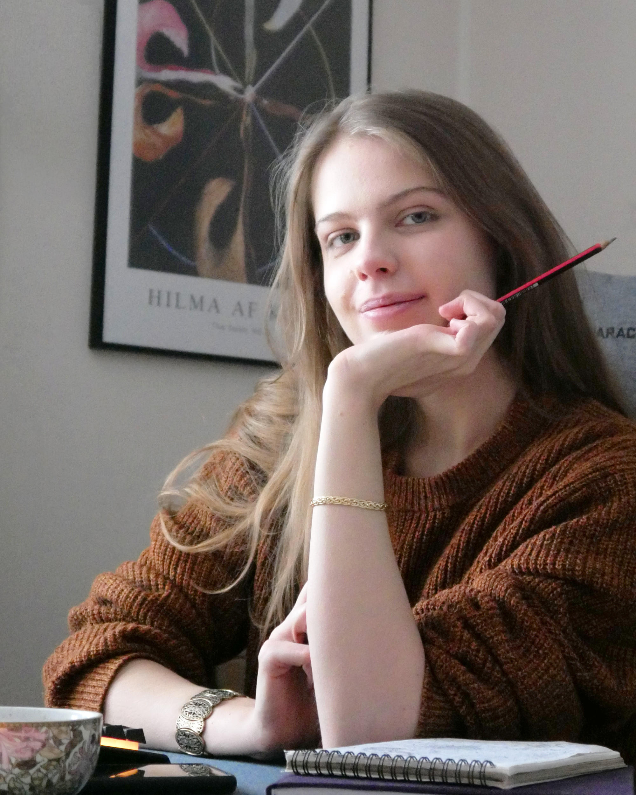

Hej, jestem Angelika Pióro
Moją pasją jest branding i tworzenie materiałów marketingowych, które łączą estetykę z funkcjonalnością.
Jestem absolwentką BA in Graphic Design z Coventry University. Biegle posługuję się Adobe Creative Suite, a znajomość podstaw HTML, CSS i JavaScript pozwala mi projektować w zgodzie z technicznymi ograniczeniami i efektywnie współpracować z zespołami developerskimi. Mam doświadczenie zarówno w projektach akademickich, jak i w pracy wolontariackiej, co nauczyło mnie pracy procesowej, współpracy w zespole i przyjmowania konstruktywnego feedbacku.
